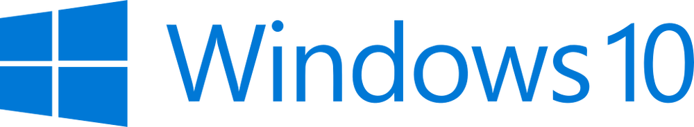

NOVEDADES
Selecciona la version de windows
Windows 95 fue lanzado el 24 de agosto de 1995 con varias funciones nuevas, principalmente la interfaz gráfica de usuario, el menú Inicio, el Explorador de Windows y la barra de tareas; fue el primer sistema operativo de la familia 9x.
